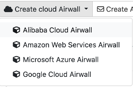

Microsoft Azure – Set up an Airwall Gateway
You can configure cloud Airwall Gateways on Azure from your Conductor.
Prerequisites
- Required licenses
- An Airwall 300v license for each virtual Airwall Gateway you are setting up.
- Supported versions
- Conductor v2.2.3 and later
- Access to a Microsoft Azure account with billing set up. If you do not have an account, you can create a free Microsoft Azure account and upgrade it to a full account later.
- Set up and license an Airwall Conductor.
Create an Azure Application to connect to the Airwall Conductor
Check your Azure documentation for the most recent instructions on creating an application.
- In Azure, in Active directory, under App registrations, register or choose an application to act as Airwall API endpoint.
-
In the Azure application, in Certificates & secrets, create a new client
secret for the app to connect to Conductor.
Copy it to a secure location.
Important: You must copy the new client secret value at this step, because you won’t be able to retrieve the key later.
-
From the Azure application you created, note the following information:
- Azure Application ID – Get from the Azure application Overview page.
- Azure Application key – The client secret you noted above.
- Azure Subscription ID – In Azure, under Users, get the subscription details to find the ID. It’s also at the top of your Powershell window.
- Directory ID – Get Directory (tenant) ID from the Azure application Overview page.
-
Set up a role for the application you created to use as authorization to create
Airwall Gateways
in your Azure environment.
- From Subscriptions, select your subscription, and then select Access control (IAM).
- Add a role assignment, and assign the App you created to the role: For Role, select Contributor, and for Assign access to, select User, group, or service principal, and then search for your App. You can also select a custom role with the permissions you want. For more information, see Azure help: Create a role in the Azure portal.
Accept Azure Terms for the Airwall Gateway Images
Before you can create Airwall Gateways in the Conductor, you’ll need to accept terms on Azure for the versions of the Airwall Gateway that you plan to deploy. You only have to accept terms in your current Azure subscription once for each version.
- In Azure, open Powershell.
-
Enter the following command, changing the
–urnvalue to the images for the Airwall Gateways you’re trying to deploy. For example:az vm image terms accept --urn tempered-networks-inc:tempered-airwall-v3:tempered-airwall-byol-v300:3.0.0
You can get the value you need for –urn in the Conductor from
the summary page when you are creating the cloud Airwall Gateway. Copy
the value for Airwall image ID,
and then change the forward slashes to colons. For example, if the drop down list
shows an image id of
tempered-networks-inc/tempered-airwall-v3/tempered-airwall-byol-v300/3.0.0,
edit for the --urn to
tempered-networks-inc:tempered-airwall-v3:tempered-airwall-byol-v300:3.0.0.
Add Azure as a Cloud Provider in Conductor
- In Conductor Settings, open the Cloud providers tab.
- Under Configured cloud providers, click Add cloud provider, and then select MS Azure.
-
Fill in the form, using the values noted when creating an application in
Azure:
- Application ID – Enter the Azure Application ID.
- Client secret – Enter the Azure Application key.
- Subscription ID – Enter the Azure Subscription ID.
- Tenant ID – Enter the Directory (tenant) ID.
-
The Azure route injection setting determines how new
routes are added to the Azure routing table. The routes are for traffic on your
protected overlay network between protected devices and the Airwall Gateway.
Here are the recommended settings depending on your deployment details:
- If you are using a Airwall Relay, set to Disabled.
- If you want to handle traffic for devices individually, set to Individual traffic.
- If you want one route to send all traffic to the overlay port on the Airwall Gateway, set to All traffic.Note: All traffic is effectively ‘full tunnel’ mode. With Individual traffic, you could add routes that send traffic around the Airwall Gateway.
- For Default region, click the Sync icon to check the connection and fill in your options. When it connects, select your default region from the list.
- Click Finish.
You’re now ready to create cloud Airwall Gateways in Azure in the Conductor.
Add an Azure Cloud Airwall Gateway
You must Set up Microsoft Azure as a cloud provider before you can add an Airwall Gateway in the Conductor
-
On the Airwalls
page, (or in Conductor
Settings
Cloud providers tab), select New cloud
Airwall, and then select Microsoft Azure
Airwall.

- In v2.2.8 and later, select Create stand-alone Airwall gateway, and then Next.
-
In v2.2.8 and later, if you want to use a template to create the Airwall Gateway,
select the template, select Next, and then give the Airwall Gateway a
descriptive name. You can then skip to the next step.
To continue without a template and enter the information manually, just select Next.
-
If you are filling in information manually, or want to change the
template, fill in the Name and Image
and network options for this Airwall Gateway. For Machine type, the default typically
works. You can select a different size if needed for your
purposes.

-
If you are filling in information manually, or want to change the
template, fill in the Name and Image
and network options for this Airwall Gateway. For Machine type, the default typically
works. You can select a different size if needed for your
purposes.
- Check the summary and if everything is correct, select Create cloud Airwall.
- Select Finish. It may take up to 5 minutes for Microsoft Azure to complete creating the Airwall Gateway.
You’ve completed creating an Azure cloud Airwall Gateway, and now need to configure Provision, License, and configure it. For help, see Provision and License Airwall Edge Services and Configure Airwall Edge Service Settings.
Provision and License Airwall Edge Services
How to provision and license Airwall Edge Services. You need to add Airwall Edge Services licenses to the Conductor before you can provision and license Airwall Edge Services.
- In Conductor, open Settings, and go to the Licensing page.
- If you have a license voucher, Add Airwall Edge Service Licenses to the Conductor. If you don’t have a license voucher, contact sales@tempered.io to get one before continuing.
- Install the Airwall Edge Services you want to license and connect them to the Conductor. For more information, see Deploy and Configure Airwall Edge Services and Connect Airwall Gateways to the Conductor.
-
Under Provisioning Requests, select the check boxes for
the Airwall Edge Services
you want to provision, and under the Actions dropdown,
click Grant Request to provision your Airwall Edge Services.
They should reconnect to the Conductor
and appear in your Airwall Edge Services
list as unmanaged.
Note: You can also grant provisioning requests from the Provisioning tab on the Dashboard.
- On pre 2.2x Conductors, click Sync.
- On the Conductor dashboard, click the Show all Airwalls box and filter the Airwall Edge Services by unmanaged.
-
In the row for the Airwall Edge Service
you want to license, in the far right column, click the arrow to open the drop
down menu, and select Manage Airwalls.

Set up an Underlay IP NAT to Connect to your Azure Airwall Gateway
If you want other Airwall Edge Services to be able to connect to your Azure cloud Airwall Gateway, you need to set up a port group on your Underlay to connect to the public IP Azure creates for your Airwall Gateway.
To see if it’s set up yet, open the Azure Airwall Gateway in the Conductor. If you see a Source IP next to Online status, you need to set it up. The public IP is also accessible from the newly created resource group for your Azure Airwall Gateway.
- On the Azure Airwall page, on the Airwall tab, copy the Source IP next to Online status.
- Go to the Ports tab.
- Open the Underlay Port group, and click Edit Settings.
- In Underlay IP (NAT), enter the Source IP you copied above.
- Select Update Settings.
You now have an Azure cloud Airwall Gateway set up and ready to use.
Troubleshoot Setup on an Azure Cloud Airwall
If you get an “Authorization failed” message when trying to create an Azure cloud Airwall, you need to accept terms for the image you’re using. See Accept Azure Terms for the Airwall Gateway Images .